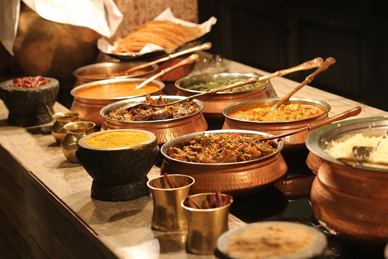
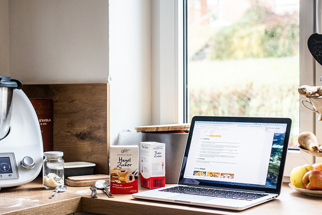

History of Food Blog's chef
- 1998:
-

Founding of first cartering service
- 2000:
-
 Opening of first restaurant
Opening of first restaurant - Until 2005:
-
Opening of four more restaurants in different cities
- 2008:
-
 First cooking show
First cooking show - 2015:
-

Launch of Food Blog